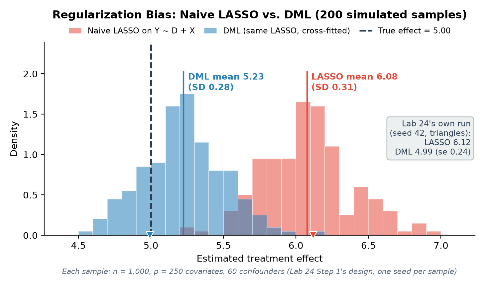
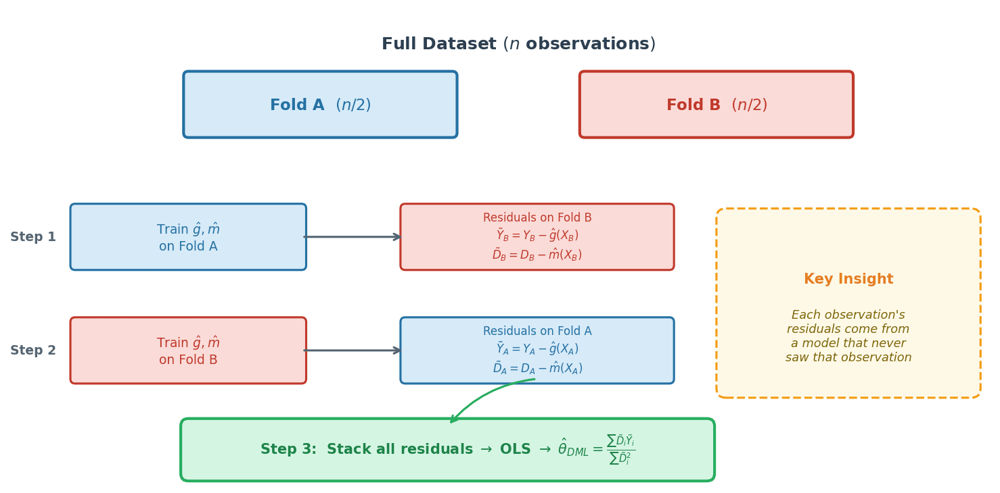
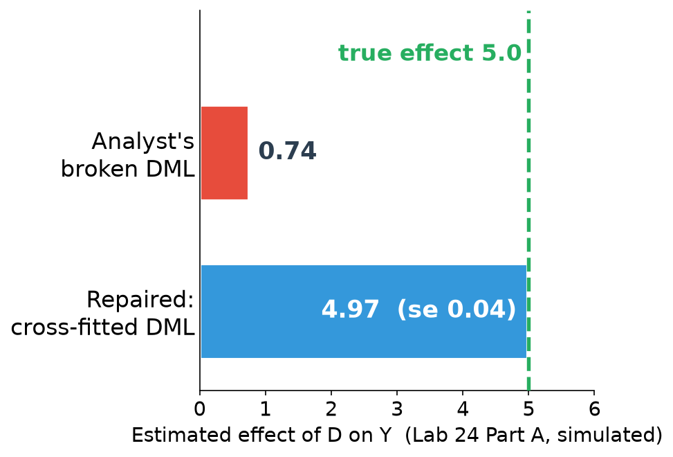
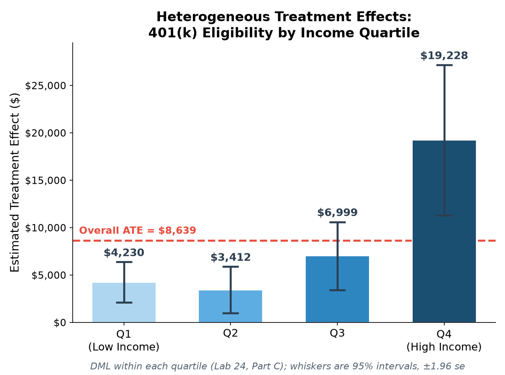
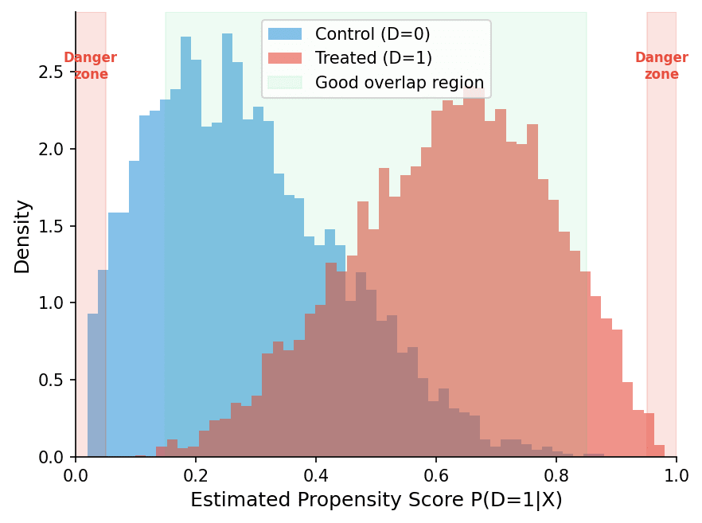
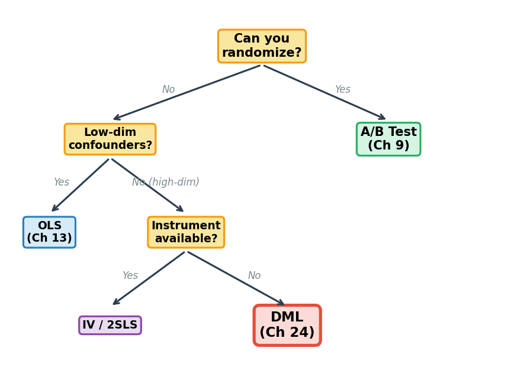

ECON 5200 — Chapter 24 of 26
Dr. Richeng Piao
Fall 2026 • 95 min • Presentation + Lab
Ch 9: What made the Lalonde ATE estimate causal?
→ Randomization. Random assignment ⇒ no selection bias.
Ch 15: LASSO trades a small increase in ___ for a large decrease in ___.
→ Bias for variance. Today we'll see why that breaks causation.
Ch 16: What does the L1 penalty do to unimportant coefficients?
→ Shrinks them to zero. But what if a "unimportant" predictor is a crucial confounder?
Delivery platforms find that much promotional spending goes to customers who would have ordered anyway.
A/B tests estimate the average effect — but targeting needs the individual-level causal response.
DML + CATE targeting → aim the promotion at customers whose orders it actually changes.
The same logic applies to fees, discounts and driver incentives.
You have powerful prediction tools: Random Forests, LASSO, cross-validation.
Why not include the treatment \(D_i\) alongside controls \(\mathbf{X}_i\) in a LASSO and read off \(\hat{\theta}\)?
This is one of the most common mistakes in applied data science.
Why it matters: this bias does not shrink with more data, so a big dataset gives a precise wrong answer.
\[Y_i = \theta_0 D_i + g_0(\mathbf{X}_i) + \varepsilon_i\]
\(g_0\) and \(m_0\) are nuisance parameters — we need to account for them but don't care about their values.
\[\hat{\theta}_{\text{LASSO}} = \arg\min_{\theta,\beta}\left\{\sum(Y_i - \theta D_i - \mathbf{X}_i'\beta)^2 + \lambda\|\beta\|_1\right\}\]
The penalty \(\lambda\|\beta\|_1\) shrinks control coefficients → under-controls for confounders.
Omitted confounding leaks into \(\hat{\theta}\) → first-order bias that persists as \(n \to \infty\).

You run LASSO with treatment + 200 controls. The treatment coefficient will be:
Answer: C. LASSO shrinks the controls, so confounders are under-controlled and leak bias into \(\hat{\theta}\), in the confounding's direction. This is first-order bias: more data doesn't fix it.
"LASSO's bias doesn't vanish with more data. What does this break in our Ch 15 bias-variance story?"
Think-pair-share: 2 min think, 2 min discuss, 1 min share.
Main point: Prediction bias and causal bias have different consequences. Prediction bias means slightly off forecasts. Causal bias means wrong policy decisions. DML uses biased ML for nuisance (acceptable) while keeping the causal estimate unbiased.
Recall FWL (Ch 14): Residualize both \(Y\) and \(D\) against controls, then regress residuals.
DML extends FWL to high dimensions: Replace OLS with any ML model in the "cleaning" step.
Problem: If we train \(\hat{g}\) and \(\hat{m}\) on the same data, overfitting leaks into \(\hat{\theta}\).
Solution: K-fold cross-fitting (same logic as cross-validation, Ch 15):

Small errors in \(\hat{g}\) and \(\hat{m}\) get multiplied together before affecting \(\hat{\theta}\).
If nuisance errors are \(O(n^{-1/4})\), their product is \(O(n^{-1/2})\) — negligible relative to sampling noise.
Result: DML achieves \(\sqrt{n}\) consistency — same rate as OLS.
5200 detail: Score function \(\psi = \tilde{D}_i(\tilde{Y}_i - \theta\tilde{D}_i)\) satisfies \(\partial_\eta E[\psi] = 0\) at the truth.
Data: 9,915 households from the 1991 SIPP.
Treatment: Employer offers 401(k) plan (\(D = \texttt{e401}\)).
Outcome: Net total financial assets (\(Y = \texttt{net\_tfa}\)).
Challenge: Employers offering 401(k)s differ systematically — higher-income, more financially sophisticated workers.
Question: Does 401(k) eligibility cause higher wealth?
Naive OLS (no controls)
$19,559
Causal + selection bias
DML (RF nuisance, 5-fold)
$8,639
Causal effect only
The ~$10,900 gap is selection bias removed by DML.

In DML cross-fitting, why not use a single held-out test set?
Answer: D. Every observation is used for training (in K-1 folds) AND for residual computation (in its holdout fold). More efficient than wasting a fixed test set — same reason K-fold CV beats a single train/test split.
"Promotions, fees, 401(k) — completely different domains. What's the common structure?"
Open discussion: 5 min.
Three common features:
If any one is missing: few confounders → OLS, random assignment → A/B test, prediction goal → standard ML.
ATE of \$8,639 is an average. Does every household benefit equally?
\[\tau(\mathbf{x}) = E[Y_i(1) - Y_i(0) \mid \mathbf{X}_i = \mathbf{x}]\]
The ATE is a mean — and it inherits the mean's vulnerability to heterogeneity (Ch 4 callback).

The ATE of \$8,639 masks a 4.5-fold difference between bottom and top quartiles.
Policy implication: in dollars, a universal 401(k) mandate helps the top income quartile most.
Marketplace fees
Fee sensitivity can be near zero for niche products and large for popular ones with close substitutes.
CATE says where a fee change costs sales.
Ride pricing
Price sensitivity can change with conditions such as rain, which one average misses.
CATE says when a price change moves demand.
Your firm: 500 features, observational data, n=50K.
CEO asks: "Does our loyalty program increase spending?"
A = gold standard IF you can randomize (but can't un-enroll members). B = unstable in 500 dims. D = hard to find valid instrument.
1. Conditional Ignorability: \(Y(1), Y(0) \perp D \mid \mathbf{X}\)
After conditioning, treatment is as-good-as-random. DML can't fix unmeasured confounders.
2. Overlap (Positivity): \(0 < P(D=1|\mathbf{X}) < 1\)
Both treated and untreated must exist at every covariate combination.
3. Nuisance Quality: \(\hat{g}, \hat{m}\) converge faster than \(n^{-1/4}\)
ML models must be "good enough" predictors.

| Chapter | Method | Estimate | Lesson |
|---|---|---|---|
| Ch 8 | Two-sample t-test | \$1,794 | Statistical significance ≠ causal |
| Ch 9 | Permutation + Bootstrap | \$1,794 (ATE) | Randomization makes it causal |
| Ch 24 | DML | ~\$1,600–\$2,100 | Recovers benchmark from obs. data |
Same data, three chapters, increasingly sophisticated analysis.
DML doesn't replace experiments — but when experiments are impossible, it's the next best thing.
The DML estimate is \$8,639. Naive OLS says \$19,559. The ~\$10,900 difference represents:
Answer: B. The ~\$10,900 gap is selection bias — 401(k) firms have wealthier workers for other reasons. DML's two-step residualization strips that away. Same logic as Lalonde in Ch 9.

Causal Arc (Ch 9 → 10 → 24)
ML Arc (Ch 15–23 → 24)
Next: Ch 25 (AI Literacy) • Ch 26 (Capstone — your final project). This week: do Lab 25’s “Before this lab” installs (about 20 min).
Part A (20 min) + Write it yourself (40): find three errors in an analyst’s cross-fitting; write cross_fit_dml()
Part B (30 min): DoubleML on the 401(k) data — choose the covariates, read a sensitivity analysis
Part C (20 min): causal forest CATEs beside DML within income quartiles
Notebook: lab-ch24-diagnostic.ipynb • 115 min core + 20 setup and submission